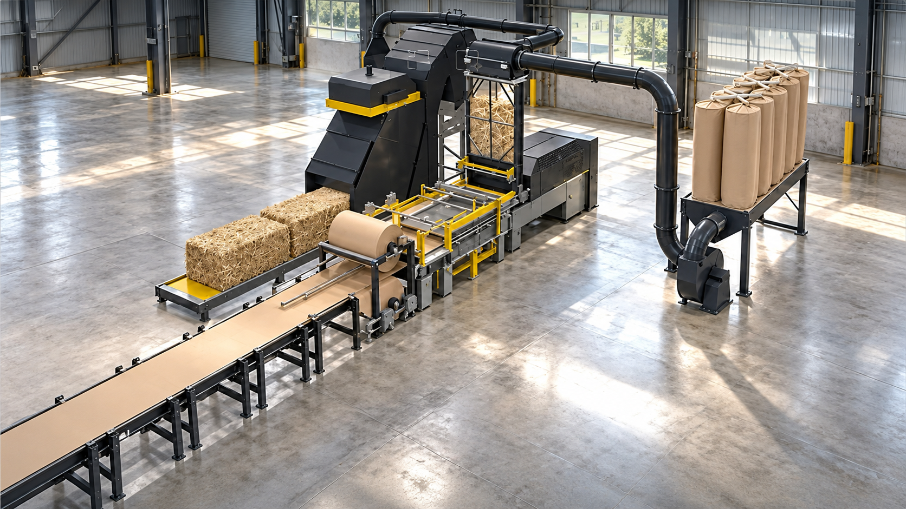
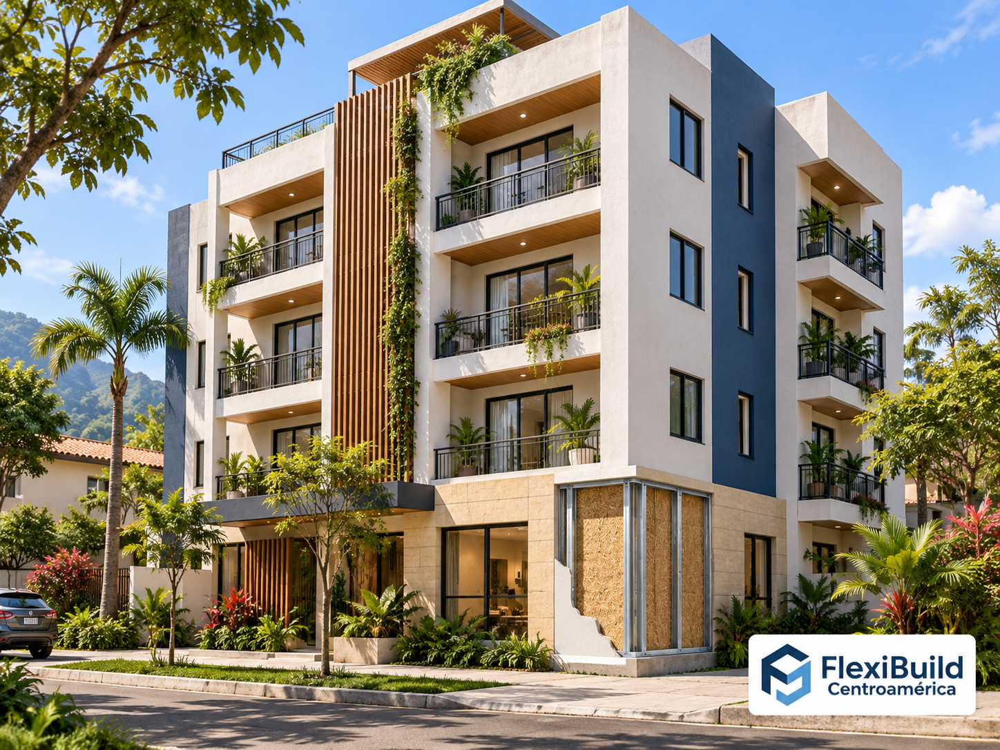

Vivienda social
Visualización conceptual de viviendas repetibles para proyectos habitacionales.
Paneles estructurales de fibras agrícolas, principalmente paja de arroz, con diseño BIM por proyecto y preparación digital para corte CNC de bastidores y componentes.
Producción proyectada en Nicaragua para Nicaragua, Costa Rica, El Salvador, Honduras, Guatemala y Panamá.
Ver aplicaciones
Biomasa agrícola · diseño digital · fabricación por proyecto
La propuesta integra en Nicaragua los tableros estructurales OSE Board, fabricados principalmente con paja de arroz, a diseños coordinados por proyecto. Las visualizaciones muestran aplicaciones previstas del sistema biomodular.
Cada proyecto se coordina digitalmente en BIM/CAD para definir dimensiones, aberturas, encuentros y despiece. El flujo prepara el corte CNC de bastidores y componentes identificados para montaje en planta o en sitio.
La CNC se plantea para cortar bastidores y componentes a medida. La fabricación del tablero ocurre en una línea distinta; el corte CNC de los paneles y la comunicación automática entre programas y máquinas requieren desarrollo de proceso.
El sistema se encuentra en desarrollo. Licencia de tecnología, suministro de maquinaria, integración, producción local y aplicaciones finales dependen de acuerdos y de la ingeniería de cada proyecto.
Video en español · OSE
Presentación en español del sistema de paneles OSE y su tecnología de producción.
Tecnología para producción regional
El video presenta la línea THEODOR 1200 de OSE en Suecia como referencia tecnológica para el proyecto de una planta de paneles de fibras agrícolas destinada a Centroamérica.

Conoce en video el equipo presentado por OSE en Suecia. La instalación de una línea productiva en Nicaragua forma parte del proyecto regional propuesto.
Aplicaciones previstas
El objetivo es desarrollar una solución de calidad y costo competitivo para programas de vivienda social y proyectos públicos, constructoras y desarrolladores en Nicaragua, Costa Rica, El Salvador, Honduras, Guatemala y Panamá.
Soluciones repetibles que puedan evaluarse en programas habitacionales y proyectos públicos, conforme a normas, ensayos y alcance técnico de cada país.
Habitaciones, módulos y espacios de servicio a evaluar según uso, altura, ocupación y diseño estructural.
Oficinas, escuelas, clínicas, comercio y otros edificios, sujetos a la validación del sistema completo para cada aplicación.
El diseño modular y el despiece CNC buscan facilitar control de materiales y montaje. Los ahorros, plazos y costos instalados deben medirse en pilotos.
Nicaragua como hub de producción regional
Buscamos empresas, personas inversionistas y socios estratégicos interesados en desarrollar una planta local de paneles de biomasa agrícola y una plataforma de soluciones constructivas para Nicaragua y Centroamérica.
La propuesta de inversión contempla la producción de tableros, desarrollo de sistemas constructivos, venta regional y proyectos de vivienda y comerciales. El plan busca crear empleo industrial, incorporar paja de arroz de proveedores locales y acercar capacidad de fabricación al mercado de construcción de la región.
Si su empresa, fondo, institución financiera o equipo desea explorar esta oportunidad, contáctenos para solicitar el dossier preliminar y conversar sobre el alcance, la estructura, la demanda y las siguientes etapas.
Tecnología OSE · sistema de muro
OSE Board es un tablero estructural para sistemas de muro, fabricado con fibras agrícolas comprimidas —principalmente paja de trigo o arroz— y caras de papel. Su formato grande permite un montaje en seco para sustituir paredes de mampostería.

OSE plantea el tablero como parte de un sistema completo de muro: modulación, uniones, apoyos, aberturas, protección y acabados se coordinan en el diseño del edificio.
Visualización conceptual de viviendas repetibles para proyectos habitacionales.
Una aplicación residencial contemporánea del sistema de paneles biomodulares.

Visualización conceptual para explorar el sistema en proyectos residenciales multifamiliares.
Composición, dimensiones y sistema de muro.
Proceso industrial y capacidad nominal publicada por turno.
Secuencia de coordinación y ensamble del sistema.
Información técnica y experiencia del sistema.
Comparta su interés, organización y tipo de participación que desea explorar.